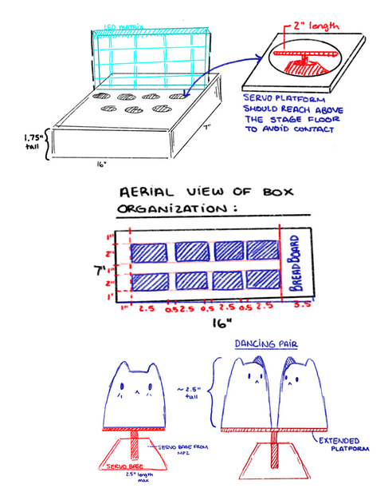
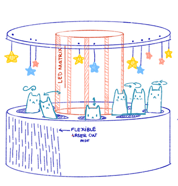
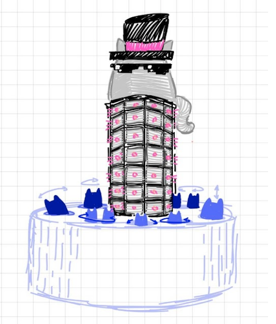
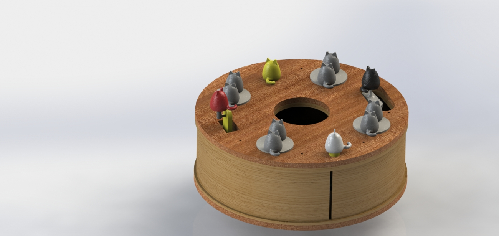
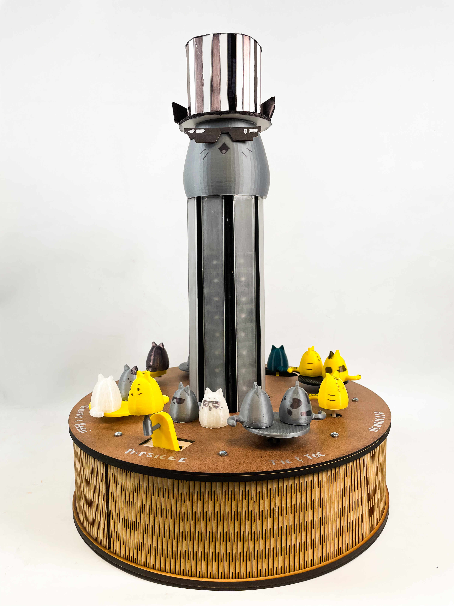

Disco Cats
Mechanical
Our mechanical team primarily used lasercutting and 3D printing to create the structure that expressed our output.
Project Evolution
Sprint 1: Music Box
Sprint 2: Circular Platform
Sprint 3: Rave King
The Stage
 As the primary housing unit for the project, this had to be large enough to hold all of our wiring and electrical components, the motors and stands that support the cats, and the linkages that drive the cat motions. Because of the sheer amount that this stage had to contain, our team designed big. The housing unit stands at 5.5” in height with an 18” diameter. The walls are created from living hinges and the components of the stage are held together with a slot-based design.
The LED Housing
 This component of the project brings height and conveys the primary expression of note pitches. It stands at 16.5” tall and holds 64 LEDs in an 8x8 matrix. The material is laser cut acrylic, assembled with a puzzle piece method and spray painted black to minimize the reflection of light in any unwanted directions. The 8 columns of the octagonal LED matrix column line up with the 8 dancing cat figures. Each column and dancing cat pairing correspond to an instrument being played in the song, creating a coherent and visually pleasing effect.
The Cats
Various linkage systems and stepper motor interactions make 3D-printed cats puppets dance. Four unique motions were incorporated into our design: (1) up and down, (2) the infinity loop, (3) dancing pair, and (4) one dancing on its own.
Rotating Cat
This is a pretty simple mechanism. We designed a part that fits into the DC motor. A wooden shaft transmits the torque from the DC motor to the cat model, making the cat rotate to the given signal.
Circular Cat
Circular cat uses the same method as the rotating cat but adds a bar to the system. Instead of the shaft directly moving the cat, the shaft moves a bar link that connects the shaft and the cat. With this change, the cat's rotation follows a circular path and orbits the shaft axis.
Dancing Pair Cats
Dancing cats use the same shaft system as the two prior mechanisms, but this time the shaft is connected to a platform with two cat models are placed on top. This way the motion of cats looks as if they are turning around each other / dancing as a pair.

Infinity Sign Cat
This design is trickier and more delicate than the previous ones. It uses a four bar linkage and two DC motors to create an infinity sign shaped path for the cat model. The DC motors move their shafts in opposite directions. With enough precision in initial state and speed of motors, a very clear infinity sign shape is created. This design has to be very precise to create a clean path. To understand how the four bar linkage system works, watch this video: The Infinity Sign Drawing Device
Jumping Cat
A slider crank mechanism moves the cat model on the vertical axis. Its motion is noticeably jerky, as the slider crank mechanism that works on the vertical axis has bear a significant amount of weight which makes it difficult to build with low quality parts. Thus, we have a non perfect slider crank mechanism that accomplishes the job.
About Us
- Mechanical: Efe Gulcu & Cory Knox (also PM)
- Electrical: Max Stopyra
- Software: Gati Aher & Mari Kang


-
Olin College of Engineering
1000 Olin Way, Needham, MA
Principles of Integrated Engineering, Fall 2021 - disco_cats
- Website Powered by HTML5: Solid State